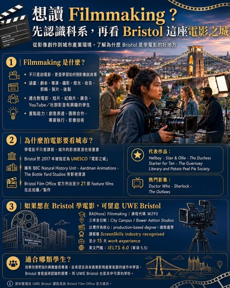

《看懂制度，選對世界》第一集
想讀電影製作？看看英國 Bristol 這個城市
「 從一個想法開始，到劇本發展、分鏡、拍攝、現場調度、攝影、燈光、錄音、剪輯、後製，再到最後作品呈現，每一個環節都需要創意，也需要技術。

【 想讀 看看 英國Bristol這個城市】 「 從一個想法開始，到劇本發展、分鏡、拍攝、現場調度、攝影、燈光、錄音、剪輯、後製，再到最後作品呈現，每一個環節都需要創意，也需要技術。對學生來說，Filmmaking 適合的不只是未來想當導演的人，也包括對以下方向有興趣的學生： 電影與短片創作、紀錄片製作、廣告與品牌影片、YouTube 與社群影音、音樂錄影帶、影視剪輯與後製、攝影與燈光、串流平台內容製作、創意媒體與數位內容產業 現在的影像產業早已不只限於電影院。
從 Netflix、YouTube、TikTok、Instagram Reels，到企業形象影片、品牌短片、教育影片與紀錄片，影像已經成為現代社會最重要的溝通方式之一。因此，學習 Filmmaking 的重點，不只是學會使用攝影機，而是學會如何用影像說故事、傳達觀點，並完成一個真正可以被觀看、被理解、被分享的作品。學電影，城市本身也很重要 如果要學 Filmmaking，選擇一座有影視產業、創意社群與拍攝資源的城市，會比單純只看學校排名更重要。英國 Bristol 就是一座非常適合學習電影與影像製作的城市。
在 2017 年被 指定為 UNESCO City of Film，也就是「 Bristol 不只是一般的大學城市，而是一座長期具有影視文化、拍攝場景、製作公司、動畫產業與創意人才聚落的城市。Bristol 擁有 BBC Natural History Unit、Aardman Animations、The Bottle Yard Studios 等重要影視資源。
Aardman Animations 正是《Wallace & Gromit》、《Chicken Run 落跑雞》、《Shaun the Sheep 笑笑羊》等知名動畫作品背後的代表性工作室。這座城市也吸引許多電影與影集在此拍攝或製作。
根據 Bristol Film Office 的資料，Bristol 曾出現在多部電影與電視作品中，包括： 《Hellboy 地獄小子》 《Stan & Ollie 喜劇天團：勞萊與哈台》 《The Duchess 浮華一世情》 《Starter for Ten 戀愛學分》 《The Guernsey Literary and Potato Peel Pie Society 真愛收信中》 《Doctor Who 超時空奇俠》 《Sherlock 神探夏洛克》 《The Outlaws 法外之徒》 《Industry HBO 金融業實錄》 《A Good Girl’s Guide to Murder 好女孩的謀殺調查報告》 《Skins 皮囊》 Bristol 的優勢在於，它不是把電影當成單一科系來看，而是整座城市本身就有很強的影像創作氛圍。
如果想在 Bristol 學電影，UWE Bristol 是值得考慮的選擇 在這樣的城市背景下，UWE Bristol 的 BA(Hons) Filmmaking 就成為一個值得留意的課程。這門課程的特色是以「實作」為核心，不只是讀電影理論，而是透過實際製作來學習電影。學生會從故事發想、劇本、攝影、聲音、剪輯、紀錄片、劇情片，一直到最後的畢業作品，逐步建立完整的影像製作能力。第一年，學生會建立電影語言、故事、創作脈絡與基礎製作能力。第二年，學生會進入紀錄片、劇情片與專業實務訓練，開始接近真實影視製作流程。
第三年，學生會完成 showcase、creative research project 與 final productions，整理出可用於未來升學或就業的作品集。UWE Bristol 的 Filmmaking 課程也獲得 ScreenSkills 認可，並與英國影視產業需求有所連結。學生在學期間也有機會接觸 work experience，累積更接近產業現場的經驗。Filmmaking 的價值，在於它把「我喜歡拍影片」轉化成一套完整能力：故事能力、影像能力、團隊合作、技術操作、專案管理與作品呈現。
而 UWE Bristol 的 BA(Hons) Filmmaking，則是在這座 UNESCO City of Film 裡，提供一條以實作、作品集與產業連結為核心的電影製作學習路徑。對想把影像興趣發展成專業方向的學生來說，這是一個值得列入英國升學清單的選擇。